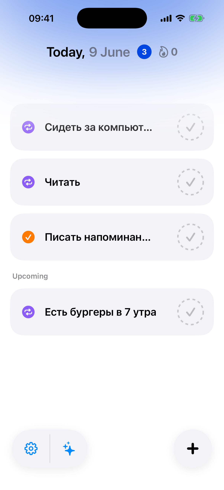
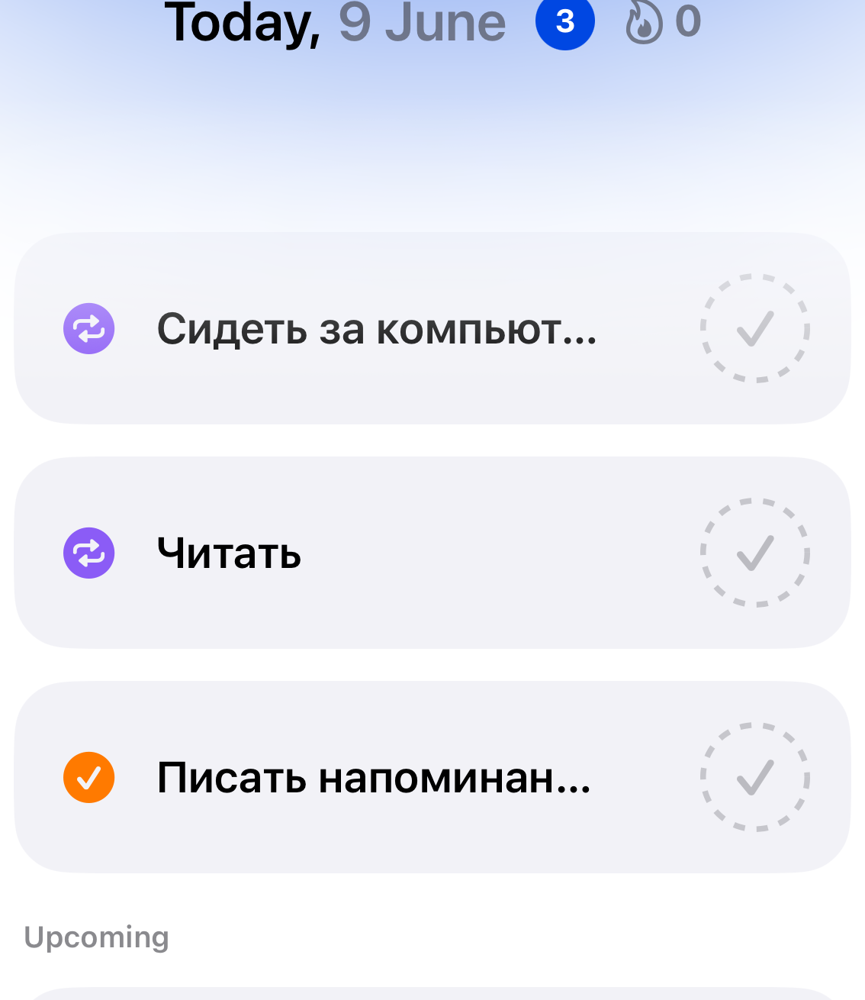

Инструменты для тех,
кто держит слово
Каждая функция создана с одной целью, помочь вам дойти до результата, а не просто отметить галочку.
Цели, которые действительно работают
Создавай задачи с понятным расписанием: каждый день, по будням, раз в неделю. Приложение выстроит план и напомнит в нужное время.
- Гибкое расписание под ваш ритм
- Описание критериев выполнения
- Приоритеты и дедлайны
- История всех попыток

Никакого самообмана
Подтверждай каждое выполнение снимком прямо в приложении. Фото хранится в истории задачи, ты всегда можешь вернуться и посмотреть, как рос прогресс.
- Съёмка прямо из приложения
- История фотоотчётов
- Мгновенная отправка на проверку AI

Claude API видит сквозь отговорки
Мы используем Claude API от Anthropic. Модель анализирует содержимое фото и проверяет, соответствует ли снимок описанию задачи. Никакой ручной проверки, всё автоматически за секунды.
Часто задаваемые вопросы про AIМотивация, которая видна в цифрах
Каждый день без пропуска добавляется к стрику. Чем длиннее цепочка, тем сильнее желание её не прервать. Это простая, но работающая механика.
- Счётчик дней подряд
- Визуальный календарь-карта прогресса
- Уведомление если стрик под угрозой
Вместе идти проще
Создавай группы с близкими, друзьями или командой. Следите за прогрессом друг друга, поддерживайте и держите взаимную ответственность.
- Создание семьи одной ссылкой
- Общая лента прогресса
- Видно, кто выполнил задачу сегодня
В нужный момент, без лишнего шума
Push-уведомления настраиваются для каждой задачи отдельно. Приложение напомнит именно тогда, когда вы обычно готовы к выполнению, не раньше и не позже.
- Время уведомления под каждую цель
- Предупреждение если стрик под угрозой
- Тихий режим и паузы
И ещё много полезного
Детали, которые делают пользование приятным каждый день.
Гибкое расписание
Каждый день, по будням, раз в неделю или своё расписание.
Статистика
Графики выполнения, лучшие серии и сравнение по неделям.
История задач
Все фотоотчёты и результаты хранятся в хронологии каждой цели.
Конфиденциальность
Данные хранятся только на вашем аккаунте. Мы не продаём информацию.
Тёмная тема
Автоматически подстраивается под системные настройки iOS.
Нативный iOS
Приложение написано на Swift и работает быстро на всех устройствах Apple.